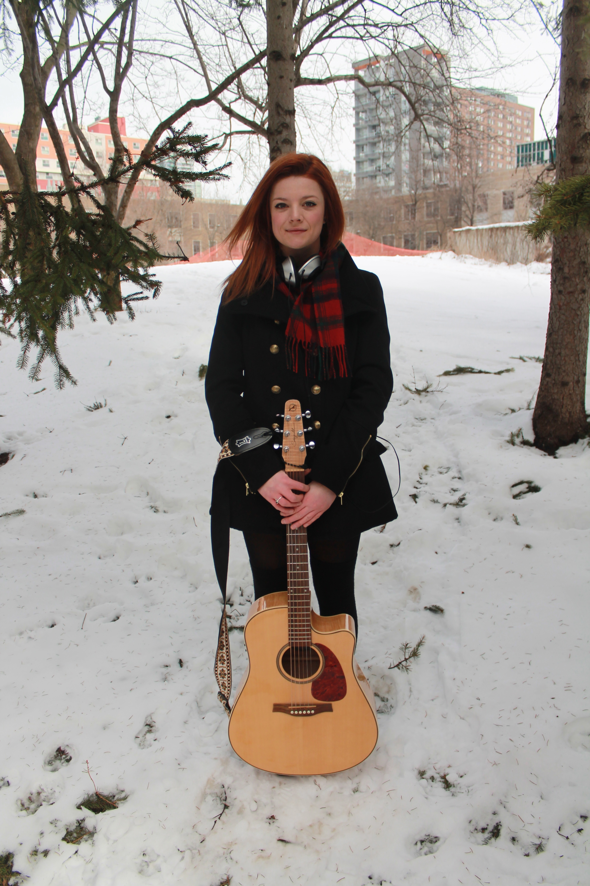

Article by Hannah Polinski
Photos by Emma Cosgrove
Uploaded on March 22, 2014In one of the many tourist squares of Verona, Italy, Ariel Dawn stands near a side street, flanked by two German musicians she met earlier at the hostel. Guitar in hand, it is her first time busking.
|
Backpacking around Europe was a great turning point in Dawn’s musical career. The summer after high school, Dawn and her best friend embarked on a three month trip to Europe. Dawn made the great decision of bringing her guitar along and set a goal of playing at least one bar in each city she visited.
“Performing in so many different cities helped me grow confidence-wise,” Dawn explains. “Even if I didn’t grow skill-wise, it was still a great experience because being a musician is more than just what you can do, it’s how you do it too.” One of her most memorable performances was in a basement bar in Glasgow, Scotland. After performing a few songs, a man came up to Dawn and told her her voice reminded him of Chris Carrabba, the lead singer of Dashboard Confessional, who at the time was one of her favourite bands. “I don’t even think it was my best singing,” Dawn admits. “It was just great that this random guy on the other side of the world compared to me to [Dashboard Confessional].” Dawn’s music career began long before her trip to Europe. Her mother, who is one of her greatest motivators and inspirations, introduced her to music from a young age. She started with classical singing and opera, but admits that she wasn’t the biggest fan of either. It wasn’t until she began working on her own pop-rock music when she began to truly fall in love with music. |

Spotlight Editor in Chief
Vjosa Isai
vjosa.isai@ryerson.ca
Want to get your time under the lights? Are you a writer looking to join the Artist Spotlight initiative? E-mail us at music@ryerson.ca to see how!